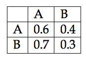
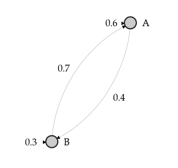
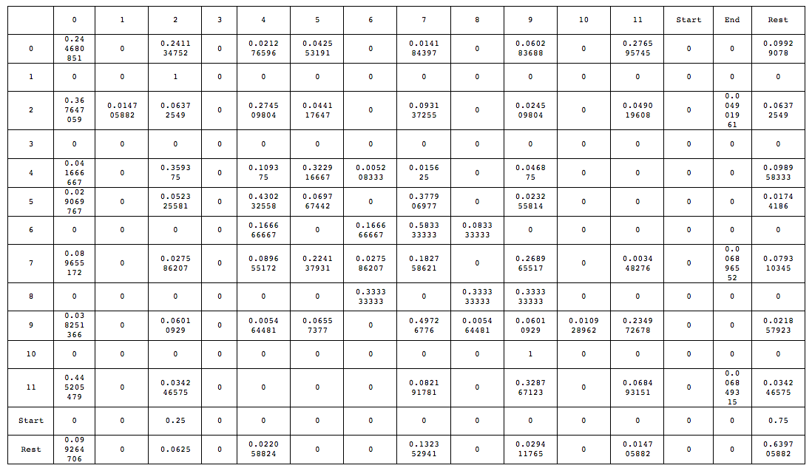
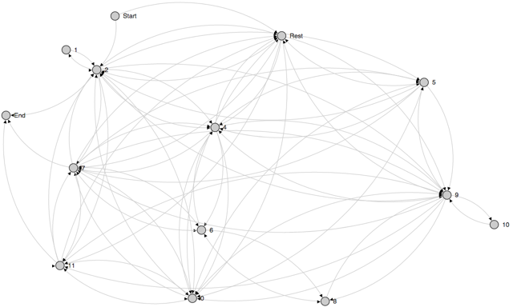

Machine Learning in Music Analysis
Posted by ehopkins on November 06, 2015
Reiner Krämer has been working with SIMSSA as a Postdoc since July, and has been presenting on some of the work he’s done, most recently at SMT. Today’s post is a guest entry from Reiner, explaining some of his recent work and its implications for music theory and musicology research.
Using machine learning techniques as a compositional tool in music is almost as old as writing computer programs itself. When in 1957 Lejaren Hiller and Leonard Isaacson composed the Illiac Suite (also know as String Quartet No. 4), the researchers employed probability (p) tables generated that were used for Markov chain computations.1 One of the main ideas behind Markov models is how to randomly move from on state to another. The task is statistically achieved by creating state transition matrices (STMs). A STM keeps a tally of how many times a state is changed from one discrete point (A) to another (B). At the end of the task a percentage, or p, is assigned to the number of times a transition occurred from A => B, A => A, B => A, B=> B. The combined transitions can be described as a bigram, or 2-gram, which in turn can be expressed in a STM (Table 1). The STM can be visualized (Figure 1) as a state transition network (STN). In an actual Markov chain, a specialized function would then use the probabilities found in the STM to influence a randomized decision making process. From a music analysis perspective the STMs themselves become of importance. The STMs hold statistical information on what type of rule-set, or grammar, was employed by a composer to generate a certain stylistic outcome.
Table 1: A first order Markov chain STM


Figure 1: State Transition Network
There a different kind of STMs that can be generated from music. In polyphonic there are a minimum of three: (1) bigram STMs of melodic successions for each voice; (2) bigram STMs of vertical successions – voices combined; and (3) bigram STMs of rhythmic successions for each voice. In addition, three STMs can be generated for 3-grams (trigrams), 4-grams (tetragrams), 5-grams (pentagrams), and any other number of n-grams. A melodic succession bigram can be generated by the movements of [C4 => D4], [C4 => C4], [D4 => C4], or [D4 => D4]. Higher order n-grams would include a series of notes (or melodic strand) to move to another melodic strand: [C4 -> D4 -> E4] => [E4 -> D-4 -> C4]. Permutations of the previous example can be expressed as a STM. A vertical succession bigram would include something like (C4 E4 G4 C5) => (C4 F4 A4 C5), and can be expanded to any series of n-grams like [(C4 E4 G4 C5) -> (C4 F4 A4 C5)] => [(G3 D4 G4 B4) -> (C4 E4 G4 C5)]. Rhythmic melodic n-grams can be expressed as [quarter -> quarter -> half] => [half -> quarter -> quarter]. Melodic and vertical n-grams can be combined, which is what the VIS-Framework was originally developed for. In fact, all permutations of melodic, vertical, and rhythmic successions can result in STMs that can be used to identify statistical attributes of a musical style.
Examining the four-voice motet De profundis (with conflicting attribution to Josquin, or Champion) generates numerous bi-grammatical STMs. The following table (for now, the table includes PCs, however, the STM algorithm can handle any type of pitch representation) shows a melodic succession STM of all the combined voices (Table 2):
Table 2: Bigram STM of the De profundis four-voice motet

The first column of the table shows a PC at the beginning of each row from which movement occurs. The header of each consecutive column shows to where the PC from the first column row is moving to. For example: PC 0 => PC 2 with a p of ca. 28%. Simply observing the data within the STM it is clear that the composition begins with a single voice on PC 2 (25%), while the other voices start with a rest (75%). The only PCs used in the composition are 0, 1, 2, 4, 5, 6, 7, 8, 9, 10, and 11. PC 10 only moves to PC 9 in all four voices, and is approached only by PC 9, thereby making it an upper neighbor motion. Likewise, PC 1 only moves to PC 2, and PC 2 only moves to PC 1, also an upper neighbor motion. The composition ends on PC collection 2, 7, 11, or G, B, D (reordered). However, a much clearer picture emerges when the STM is represented as a STN (Figure 2).

Figure 2: STN of melodic succession De profundis.
An often arising question of applying machine learning, or statistical methods to music analyses is whether or not these methods mark the end of the musicological or music analytical discourse. However, these methods should be seen as an addition to what we already know about music that we study. In fact, the newly acquired data creates more work for musicologists, music theorists, and Liebhaber alike.
-
Hiller, Lejaren, and Leonard M. Isaacson. Experimental Music: Composition with an Electronic Computer. Second ed. New York: McGraw-Hill, 1959. 131-151, 162-164. ↩